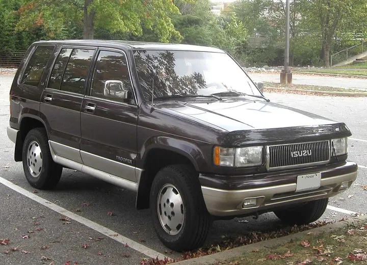
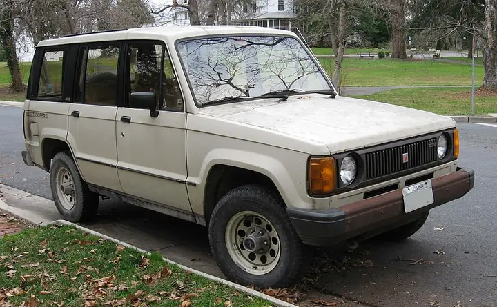

Isuzu Trooper
Second generation (1991) · 1991–2002
Abstract
This generation of the Isuzu Trooper was built 1991–2002 in Japan: Fujisawa (Isuzu Motors Fujisawa Plant), China: Zhanjiang (Zhanjiang Kingstar Vehicle Co., Ltd.), Malaysia: Pekan (Isuzu Hicom Malaysia Sdn Bhd) and other plants. Body styles: 3/5-door SUV.


1Specifications
| Production | 1991–2002 |
|---|---|
| Assembly | Japan: Fujisawa (Isuzu Motors Fujisawa Plant)China: Zhanjiang (Zhanjiang Kingstar Vehicle Co., Ltd.)Malaysia: Pekan (Isuzu Hicom Malaysia Sdn Bhd)Philippines: Biñan (Isuzu Philippines)Taiwan: Xinzhuang District (Taiwan Isuzu Motors) |
| Body style | 3/5-door SUV |
| Engine | Petrol:2.6 L 4ZE1 I43.2 L 6VD1 V63.2 L 6VD1 DOHC V6 (UBS25)3.5 L 6VE1 DOHC V6 (UBS26)Diesel:3.0 L 4JX1 turbo I4 (UBS73)3.1 L 4JG2 turbo I4 (UBS69) |
| Transmission | 4-speed automatic5-speed manual |
| Wheelbase | 3-door: 2330 mm5-door: 2760 mm |
| Length | 3-door: 4230 mm5-door: 4750 mm |
| Width | 1745-1835 mm |
| Height | 1835-1845 mm |
| Also called | Isuzu BighornIsuzu Citation (Malaysia)Acura SLX (North America)Chevrolet TrooperHolden JackarooHolden MontereyHonda Horizon (Japan)HSV Jackaroo (Australia)Opel MontereySanjiu 3-Nine Trooper (China)Subaru BighornVauxhall Monterey |
| Related | Isuzu VehiCROSS (short-wheelbase variant model) |
2Versions
- Badge engineered versions
- Acura SLX
- Holden Jackaroo/Monterey
- V8 HSV Jackaroo
- Holden Jack8 Concept
- Honda Horizon
- Opel/Vauxhall Monterey
- Subaru Bighorn
- Rollover controversy
3Previous generations
